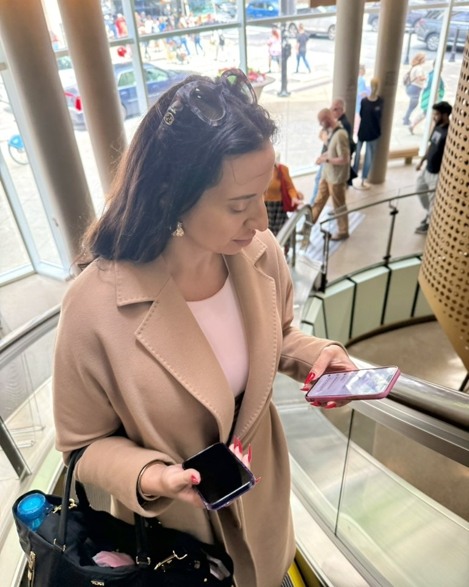

About Angela Gallitano
Your story is already being told. The question is who’s telling it.
This isn’t only about knowing your story. It’s about taking control of it, so the story people find matches who you are today.
You don’t leave your past behind to do that. I didn’t. Everything that brought you here comes with you. We root in it, and then we write what comes next, in your words.
Be known for who you actually are.
One of three leaders of LinkedIn’s global Rock Your Profile program. Then Gartner, working with CHROs, CIOs and their executive teams. Today, Salesforce, where I’m Customer Zero for some of the most advanced agentic AI on the market.
Now
The dual mandate.
By day
SalesforceStrategic Account Director partnering with enterprise healthcare organizations on AI transformation. Living on the bleeding edge of agentic systems every single day.
I’m Customer Zero for some of the most advanced agentic AI on the market today. I use it in my own work before I recommend it to anyone. I know what works. I know what doesn’t. That’s where ExecutiveOS comes from.
My name on it
The Gallitano Studio
Executive story and presence advisory for modern leaders who expect their reputation to hold up everywhere people look them up.
Work with meAlways
Systems thinker. Change agent. Uncompromising standard.
By the numbers
- 350+rooms since 2020
- 125+executives one to one
- 100sessions in five months
- 15+industries
Global footprint: The US, Italy, the UK, Hong Kong, and beyond.
2023 to 2026 · The arena
The real story lives off the org chart.
At Gartner, I started with CHROs and their HR leadership teams at some of the largest organizations in the country: Fortune 500 manufacturers and logistics companies, major health systems and health plans.
The CHRO was my entry point. It was never where I stopped. Once a CHRO trusted me, they walked me down the hall. To the CIO. To the chief data and technology officer. To the executive vice president who ran most of the company. I didn’t go around anyone. I was introduced.
So I ended up in the middle of the conversation every executive team is having right now: AI strategy and adoption, reskilling the workforce, CEO succession, what the board expects. HR on one side. Technology on the other. Me in between, helping them tell one story.
- A top-ranked children’s hospital
I connected a new CHRO’s priorities to the CIO’s: AI literacy and digital transformation. The CHRO later offered me a job. (On a call. With my boss listening.)
- A health plan
The work started in HR. It ended with the executive vice president responsible for most of the organization.
- A global logistics company
It ran from the VP of HR all the way to the chief data and technology officer.
It was always about listening. Asking the question others missed, and noticing which executive everyone was quietly following.
People told me the real story. (And I mean the REAL story.) I used it only to help: shaping my guidance to each situation, seeking out other perspectives, and keeping every client’s name private.
Customers tell me they’re thinking about leaving before they tell their boss. Executives call me about the conversation they can only have outside their own company.
That happens because they’ve watched what I do with what they tell me.
And I recognized something. Their stories were being told for them, too. By a bio somebody else wrote. By whatever comes up when you search their name.
2020 to 2023 · LinkedIn
I built every session for the room it was in.
2020 to 2023Global Rock Your Profile Leaders at LinkedIn
March 2020. The world went remote, and I was at LinkedIn. I offered one customer’s team a Rock Your Profile session on how they show up online.
One session turned into 100 in five months, on top of my quota. Customers started asking if they could buy it. Some recorded the sessions and used them to onboard their new hires.
- 100sessions in the first five months
- 15+industries
Before each one, I worked with the company to set what their people needed to walk away with. A sales team got a different session than a room of recruiters. A leadership team got a different one than summer interns.
- Every level
Summer interns and new hires. Managers, directors and VPs. Law firm partners, CEOs and the C-suite.
- Every function
Sales, recruiting, marketing, consulting, HR and leadership teams. Job seekers, too.
- 15+ industries
Software, healthcare, banking, wealth management, insurance, manufacturing, logistics, legal, media and more.
Then LinkedIn selected me as one of three Rock Your Profile leaders worldwide. From Chicago, I oversaw and trained the global program and reported to the CMO. I certified the facilitators who came after me, and I taught other account directors to run sessions of their own.
After every session, I offered a one to one. That’s where executives started finding me.
In my words
On access
I don’t go around people. I bring them with me.
On confidentiality
Reputation is currency. Every strategic advisory engagement is strictly guarded. Your narrative belongs to you, never my portfolio.
On the agentic shift
Failure is necessary. Fluency in AI is knowing which tool to reach for, and putting it down as quickly as you picked it up.
On scale
From Main Street trade businesses to Fortune 20 boardrooms, the mechanics of authority never change. Context shifts; human psychology doesn’t.
2010 to 2020 · Before that
Different rooms. Same job.
Before LinkedIn, I spent ten years with business owners and company leaders whose reputations were being written by other people. Whole Foods, then Yelp, then Glassdoor.
That’s where I became a trusted advisor. Helping someone take back a story that was being told for them.
Why I do this
People have been telling my story my entire life.
This isn’t just about knowing your story. It’s about taking control, and making sure the narrative meets who you are today, and all the experiences that brought you to this point.
Honoring the past. Rooting in it to push your story forward.

Where it started
I was looking for my thing.
I’m the youngest of four, in a family of doctors, attorneys and politicians. My siblings found their thing early and stayed with it. I kept looking for mine.
I grew up with a parent in local politics. The expectations were clear before anyone said a word: look composed, hold it together, protect the story.
So I learned early to tell the difference between the face someone shows a room and what’s underneath it. While everyone else watched the speech, I watched the room.
My whole life, other people told my story. I was still looking for the part that was mine.
- 6 monthsevery phase before this one
- 6+ yearsthis one, and counting
Every phase lasted six months. Then one of them stuck. This one is in its seventh year.
That one wasn’t a phase.
It took me a while to see why. The thing that finally stuck was helping other people tell their story.
The name
This work existed long before it had a name.
For years, people pulled me aside. A founder explaining what their company actually does. An executive rewriting their story before a board meeting. A leader finding the words for the first time.
350+ rooms. 125+ executives one to one. The US, Italy, the UK, Hong Kong and beyond. After sessions, in hallways, on calls that ran long, inside other companies’ programs. I’m proud of that work.
Then I noticed I’d been helping everyone else take their story back. Everyone except me.
So I gave the work a name, and put mine on it.
I earn trust, and then I protect it.
Reputation is currency. Every strategic advisory engagement is strictly guarded. Your narrative belongs to you, never my portfolio.
I open doors when it helps. I’ve built a strong network, and when an introduction to a peer would help you, I’ll make it. Only when it makes sense, and only with your permission.
No one can write your leadership story for you. So we write it together.
Then we make sure it’s found in the right places, at the moments that matter.
Tell me where you’re headed. I’ll tell you where I’d start.